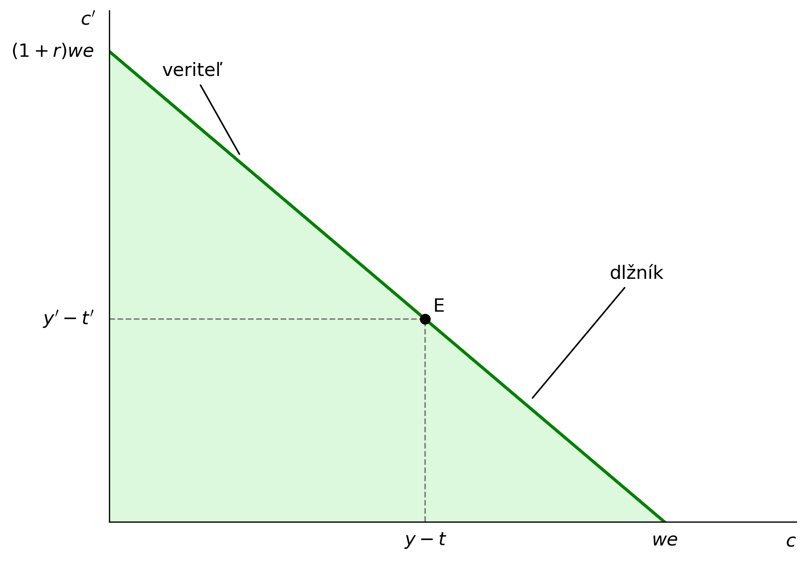
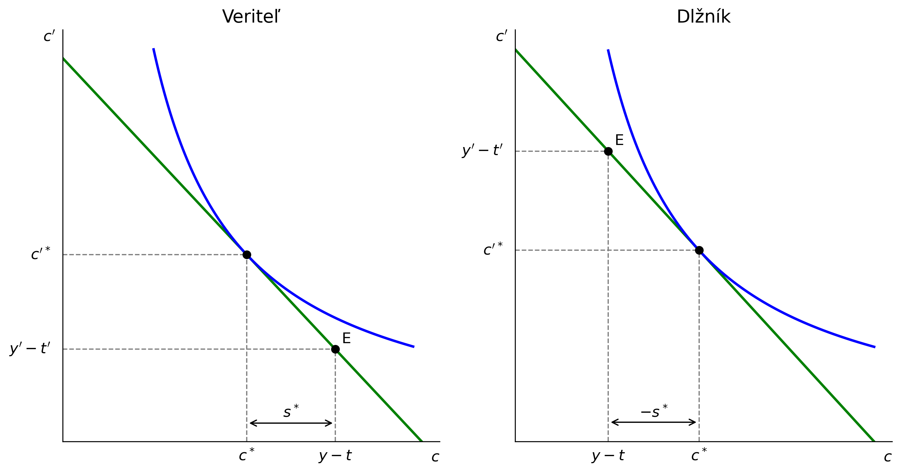
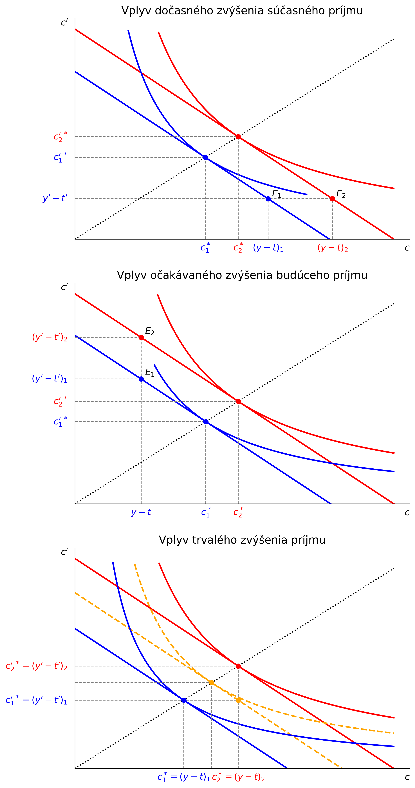
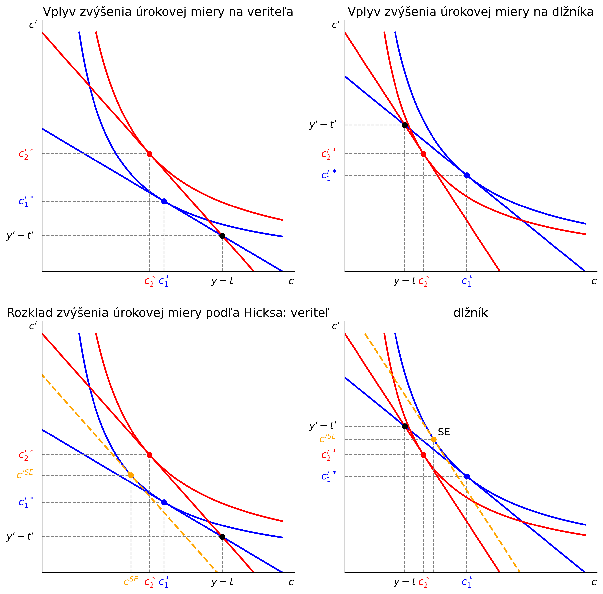

8. Spotrebiteľské rozhodovanie medzi súčasnosťou a budúcnosťou#
V predchádzajúcich kapitolách sme predpokladali, že spotrebiteľ sa rozhoduje o svojej spotrebe iba v jednom období. V skutočnosti však jednotlivci prijímajú rozhodnutia, ktoré ovplyvňujú ich životnú úroveň nielen dnes, ale aj v budúcnosti. Analýza takýchto rozhodnutí tvorí jadro dynamickej teórie spotrebiteľa.
V tomto modeli sa spotrebiteľ opäť rozhoduje medzi dvoma statkami. Na rozdiel od predchádzajúcej kapitoly však tieto statky nepredstavujú rôzne druhy spotreby, ale spotrebu v rôznych obdobiach. Prvým statkom je spotreba v súčasnosti (v prvom období), ktorú označujeme \(c\), a druhým statkom je spotreba v budúcnosti (v druhom období), ktorú označujeme \(c'\).
Predpokladáme, že spotrebiteľ žije práve dve obdobia.
Označenie
V tejto učebnici používame konvenciu, že apostrof (\('\)) označuje hodnotu príslušnej premennej v nasledujúcom období. Napríklad \(y'\) označuje príjem v druhom období, \(t'\) paušálnu daň v druhom období a \(c'\) spotrebu v druhom období.
Rovnako ako v predchádzajúcej kapitole predpokladáme, že spotreba v prvom alebo druhom období je kompozitný statok, ktorý predstavuje celkovú spotrebu tovarov a služieb. Statok podlieha skaze a nemožno ho odložiť do ďalšieho obdobia.
Predpokladáme, že cenová hladina je v oboch obdobiach normalizovaná na jednotku, teda \(P=P'=1\). Všetky premenné preto môžeme interpretovať ako reálne.
Predpokladáme, že spotrebiteľ žije v prídelovej ekonomike. V každom období dostane exogénne daný prídel statku, ktorý označujeme \(y\) v prvom období a \(y'\) v druhom období.
Tento predpoklad je analogický predpokladu nepracovného príjmu z predchádzajúcej kapitoly. Rozdiel spočíva iba v jeho interpretácii. Kým predtým sme predpokladali, že nepracovný príjem plynie zo ziskov vlastnenej firmy, teraz predpokladáme, že spotrebiteľ dostáva prídel statku priamo.
8.1. Preferencie spotrebiteľa#
Predpokladajme, že preferencie spotrebiteľa v prvom období možno vyjadriť okamžitou funkciou užitočnosti \(v(c)\), ktorá vyjadruje uspokojenie zo spotreby v prvom období.
Analogicky použijeme rovnaký funkčný tvar \(v(c')\) pre vyjadrenie uspokojenia zo spotreby v druhom období.
Predpokladáme, že funkcia \(v(x)\) je rastúca, dvakrát spojito diferencovateľná a konkávna, t. j.
Tieto podmienky zodpovedajú predpokladom o preferenciách spotrebiteľa diskutovaných pred dvoma kapitolami (Existencia funkcie užitočnosti). Prvá podmienka vyjadruje, že vyššia spotreba prináša vyššiu úroveň uspokojenia. Druhá podmienka vyjadruje klesajúcu hraničnú užitočnosť spotreby.
V príklade (Riešený príklad: Spotrebiteľské vyhladzovanie a Friedmanova hypotéza trvalého príjmu) predpokladáme jednoduchý tvar funkcie užitočnosti
Predpokladáme, že spotreba v prvom alebo druhom období je normálny ({numref}tab_prijmovy_efekt) a štandardný ({numref}tab_zmena_ceny) statok.
Spotrebiteľ zvyčajne uprednostňuje skoršiu spotrebu pred neskoršou. Túto preferenciu možno vyjadriť diskontným faktorom \(\beta \in (0,1\rangle\).
- Diskontný faktor \(\beta\)
vyjadruje, ako si spotrebiteľ cení budúcu spotrebu v porovnaní so spotrebou v súčasnosti.
Čím je hodnota \(\beta\) nižšia, tým menej si spotrebiteľ cení budúcu spotrebu v porovnaní so súčasnou spotrebou.
Celkovú užitočnosť spotrebiteľa potom definujeme ako
Takto definovaná funkcia užitočnosti priraďuje jednotkovú váhu spotrebe v prvom období a váhu \(\beta\) spotrebe v druhom období.
Pri daných predpokladoch sú indiferenčné krivky klesajúce a konvexné voči počiatku súradnicovej sústavy. Pri nezmenenej funkčnej hodnote užitočnosti, vyššia spotreba v jednom období je kompenzovaná nižšou spotrebou v druhom období, pričom spotrebiteľ je ochotný nahrádzať spotrebu medzi obdobiami tým menej, čím viac sa odchyľuje od vyrovnaného rozdelenia spotreby.
- Dynamická hraničná miera spotrebiteľskej substitúcie
Hraničná miera spotrebiteľskej substitúcie (5.5) medzi spotrebou v prvom a druhom období je daná výrazom
8.2. Rozpočtové ohraničenie#
V prvom období spotrebiteľ získa príjem \(y\). Predpokladáme, že je povinný zaplatiť reálnu paušálnu daň (Paušálna daň) \(t\). Jeho disponibilný nepracovný príjem je \(y-t\).
Spotrebiteľova spotreba sa nemusí zhodovať a príjmom. Má možnosť požičať inému spotrebiteľovi alebo vláde časť svojho disponibilného príjmu alebo naopak požičať si od iného spotrebiteľa alebo vlády. Rozdiel medzi disponibilným príjmom a spotrebou sú úspory
Premenná \(s\) môže byť kladná aj záporná. Kladná hodnota predstavuje pohľadávku, záporná hodnota pôžičku. Z (8.4), rozpočtové ohraničenie v prvom období je
V druhom období spotrebiteľ disponuje príjmom \(y'-t'\)
a príjmom zo svojich úspor \(s\) vrátane úroku. Pri exogénnej úrokovej miere \(r\), úrok vypočítame ako \(rs\). Finančný príjem spotrebiteľa v druhom období je
Keďže druhé obdobie je posledným obdobím života spotrebiteľa, neumožníme mu financovať spotrebu novými pôžičkami. Spotreba v druhom období preto musí spĺňať podmienku
Ak by platilo
spotrebiteľ by si musel v záverečnom období opäť požičať. Takáto spotreba nie je realizovateľná, pretože spotrebiteľ by na konci života nedokázal splniť svoje rozpočtové obmedzenie.
8.3. Životný rozpočet#
Podelením rozpočtového ohraničenia v druhom období (8.6) faktorom \(1+r\) a pripočítaním do rozpočtového ohraničenia v prvom období (8.5) platí
Odčítaním úspor \(s\) od oboch strán nerovnice získame súčasnú hodnotu životného rozpočtu spotrebiteľa
Ľavá strana predstavuje súčasnú hodnotu spotreby počas života spotrebiteľa. Súčasnú spotrebu \(c\) oceňujeme jej aktuálnou hodnotou, zatiaľ čo budúcu spotrebu \(c'\) diskontujeme faktorom \(1+r\).
Pravá strana predstavuje súčasnú hodnotu disponibilných príjmov počas života spotrebiteľa. Budúci disponibilný príjem \(y'-t'\) preto rovnako diskontujeme faktorom \(1+r\).
Životný rozpočet tak hovorí, že súčasná hodnota celoživotnej spotreby sa musí rovnať súčasnej hodnote celoživotných disponibilných príjmov.
- Súčasná hodnota životného bohatstva spotrebiteľa
Súčasná hodnota disponibilných príjmov počas života spotrebiteľa
Pomocou súčasnej hodnoty životného bohatstva možno životný rozpočet spotrebiteľa prepísať do kompaktnejšieho tvaru
8.4. Hranica spotrebiteľských možností#
Rozpočtové ohraničenie (8.8) vymedzuje množinu spotrebiteľských možností, teda všetky kombinácie spotreby v oboch obdobiach, ktoré si môže spotrebiteľ dovoliť.
Ak v rozpočtovom ohraničení nahradíme znak nerovnosti znakom rovnosti, získame hranicu spotrebiteľských možností
Hranica spotrebiteľských možností oddeľuje dosiahnuteľné kombinácie spotreby v oboch obdobiach od nedosiahnuteľných.
- Hraničná miera dynamickej rozpočtovej substitúcie
vyjadruje, o koľko jednotiek budúcej spotreby sa musí spotrebiteľ vzdať, ak zvýši súčasnú spotrebu o jednu jednotku a zároveň zostane na tej istej rozpočtovej hranici.
Zo životného rozpočtu (8.7)
vyplýva
Sklon rozpočtovej hranice je preto určený faktorom \(1+r\). Jedna jednotka spotreby v prvom období má alternatívny náklad vo výške \(1+r\) jednotiek spotreby v druhom období.
Čím je úroková miera vyššia, tým strmšia je rozpočtová hranica a tým drahšia je súčasná spotreba vyjadrená v jednotkách budúcej spotreby.
Všimnite si
Za predpokladu konštantných cien spotreby \(P=P'\), nominálny životný rozpočet možno zapísať
Tento zápis je analógiou rozpočtového ohraničenia spotrebiteľa
pričom
Súčasná hodnota, budúca hodnota, úročiteľ, odúročiteľ
Pri odvodení životného rozpočtu sme rozpočtové ohraničenie v druhom období vydelili faktorom \(1+r\). Tento faktor sa nazýva odúročiteľ (diskontný faktor), pretože prevádza budúce veličiny na ich súčasnú hodnotu.
Po odúročení a sčítaní rozpočtových ohraničení oboch období sme získali súčasnú hodnotu životného rozpočtu spotrebiteľa (8.7).
Na pravej strane (8.7) je súčasná hodnota životného bohatstva spotrebiteľa (8.8)
Rovnakú informáciu možno vyjadriť aj v jednotkách druhého obdobia. Stačí celú rovnicu vynásobiť faktorom \(1+r\). Tento faktor sa nazýva úročiteľ, pretože prevádza súčasné veličiny na ich budúcu hodnotu.
Budúca hodnota spotrebiteľského rozpočtu je
kde budúca hodnota životného bohatstva spotrebiteľa je
Súčasná hodnota a budúca hodnota životného bohatstva obsahujú rovnakú informáciu. Líšia sa iba obdobím, ku ktorému sú vzťahované. Súčasná hodnota vyjadruje hodnotu všetkých zdrojov v jednotkách prvého obdobia, zatiaľ čo budúca hodnota vyjadruje hodnotu tých istých zdrojov v jednotkách druhého obdobia.
Na Obr. 8.1 je znázornená dynamická množina spotrebiteľských možností (svetlozelená plocha) a hranica spotrebiteľských možností (zelená čiara).
Hranica spotrebiteľských možností prechádza troma ekonomicky významnými bodmi. Prvými dvoma sú priesečníky s osami \( [0,(1+r)we]\) a \([we,0]\), ktoré predstavujú maximálnu možnú spotrebu v druhom a prvom období.
Tretí bod je prídelový bod
ktorý predstavuje situáciu, v ktorej spotrebiteľ nevyužíva finančný trh. Spotreba sa v oboch obdobiach presne rovná disponibilnému príjmu a úspory sú nulové,
Body na hranici spotrebiteľských možností severozápadne od prídelového bodu zodpovedajú kladným úsporám. Spotrebiteľ v prvom období spotrebuje menej než je jeho disponibilný príjem, časť príjmu usporí a stáva sa veriteľom.
Naopak, body juhovýchodne od prídelového bodu zodpovedajú záporným úsporám. Spotrebiteľ v prvom období spotrebuje viac než je jeho disponibilný príjem, financuje dodatočnú spotrebu pôžičkou a stáva sa dlžníkom.

Obr. 8.1 Množina a hranica spotrebiteľských možností#
8.5. Úloha spotrebiteľa#
Úloha spotrebiteľova je výberom dynamického spotrebiteľského koša \({c,c'}\) maximalizovať funckiu užitočnosti {eq}’r_dynamicka_uzitocnost’ vzhľadom na životné rozpočtové ohraničenie (8.7) a nezápornosť rozhodovacích premenných, časové ohraničenie {eq}r_casove_ohranicenie a nezápornosť rozhodovacích premenných.
Riešime úlohu
vzhľadom na (8.7)
a
8.6. Podmienky prvého rádu#
Podmienky prvého rádu sú
dynamická hraničná miera spotrebiteľskej substitúcie (8.3) a dynamická hraničná miera rozpočtovej substitúcie medzi (8.10) sa rovnajú a
výber dynamického spotrebiteľského koša sa realizuje na hranici spotrebiteľských možností.
a (8.9):
Po dosadení vzťahov (8.3) a (8.10) do (8.13) dostaneme
Spotrebiteľ v optime oceňuje dodatočnú jednotku spotreby rovnako, ako sú jej alternatívne náklady vyjadrené úročiteľom.
Podmienka (8.14) sa často označuje ako Eulerova rovnica. Vyjadruje, akú spotrebu spotrebiteľ volí v dvoch rôznych obdobiach a určuje dynamiku spotrebiteľského správania.
Ak je okamžitá funkcia užitočnosti (8.1), Eulerovu rovnicu možno zapísať v tvare (8.20).
Redukovaný tvar modelu úlohy (8.11), (8.7) a (8.12) je
a
Dosadením (8.15) do (8.4) získame úspory v redukovanom tvare
Pri okamžitej funkcii užitočnosti (8.1) je redukovaný tvar v tvare (8.21), (8.22) a (8.23).
(8.15) rozširuje naše poznatky (7.13) o spotrebiteľskom rozhodovaní v prítomnom čase. Popri mzdovej sadzby a nepracovnom príjme, sa spotrebiteľ rozhoduje tiež podľa úrokovej miery očakávaných budúcich udalostí.

Obr. 8.2 Rozhodovanie spotrebiteľa v dvoch obdobiach#
Grafická interpretácia riešenia úlohy (8.11), (8.7) a (8.12) je na Obr. 8.2 Zelená čiara predstavuje dynamickú hranicu spotrebiteľských možností a modrá krivka indiferenčnú krivku prechádzajúcu optimálnym bodom.
Optimálny dynamický spotrebiteľský kôš \((c^*,c'^*)\) je bodom dotyku indiferenčnej krivky a hranice spotrebiteľských možností. V tomto bode sa dynamická hraničná miera spotrebiteľskej substitúcie rovná dynamickej hraničnej miere rozpočtovej substitúcie.
Tretia endogénna premenná modelu sú úspory, ktoré možno dopočítať z (8.4).
Ak je spotrebiteľov disponibilný príjem v prvom období väčší ako spotreba, je veriteľ. Má kladné úspory \(s^*\), ktoré požiča inému spotrebiteľovi alebo vláde pri úrokovej miere \(r\).
Ak je spotrebiteľov disponibilný príjem v prvom období nižší ako spotreba, je dlžník. Má záporné úspory a na doplnenie svojej spotreby si požičia od iného spotrebiteľovi alebo vlády pri úrokovej miere \(r\).
Graficky sú optimálne úspory vyznačené ako vzdialenosť medzi optimálnou spotrebou v prvom období \(c^*\) a disponibilným príjmom \(y-t\).
Pre ďalšiu analýzu uvedieme komparatívnu statiku (Komparatívna statika).
8.7. Vplyv zvýšenia životného bohatstva spotrebiteľa#
Zo vzťahu pre súčasnú hodnotu životného bohatstva spotrebiteľa
vyplýva, že životné bohatstvo sa zvýši pri raste disponibilného príjmu v prvom alebo druhom období. Disponibilný príjem sa môže zvýšiť, ak sa zvýši prídel \(y\) alebo \(y'\) alebo zníži paušálna daň \(t\) alebo \(t\)
Všetky tieto zmeny posúvajú hranicu spotrebiteľských možností na Obr. 8.3 smerom doprava hore (z modrej na červenú) a umožňujú spotrebiteľovi dosiahnuť vyššiu úroveň užitočnosti.
Pri analýze zvýšenia životného bohatstva budeme rozlišovať tri prípady:
Dočasná zmena príjmu, pri ktorej sa zmení iba disponibilný príjem v prvom období \(y-t\).
Očakávaná budúca zmena príjmu, pri ktorej sa zmení iba disponibilný príjem v druhom období \(y'-t'\).
Trvalá zmena príjmu, pri ktorej sa zmenia disponibilné príjmy v oboch obdobiach súčasne.
Spoločným znakom všetkých troch prípadov je rast životného bohatstva spotrebiteľa. Keďže predpokladáme, že spotreba v prvom aj druhom období je normálny statok, rast životného bohatstva vedie prostredníctvom príjmového efektu k zvýšeniu optimálnej spotreby v oboch obdobiach.
Spotrebiteľ však nemôže ľubovoľne zvýšiť spotrebu v oboch obdobiach naraz. Na presun k vyššej spotrebe v priebehu života využíva úspory a pôžičky, ktoré mu umožňujú prenášať zdroje medzi obdobiami. Práve preto sa optimálna reakcia úspor líši podľa toho, či ide o dočasnú zmenu príjmu, očakávanú budúcu zmenu príjmu alebo trvalú zmenu príjmu.
8.7.1. Dočasná zmena príjmu#
Účinky dočasného zvýšenia disponibilného príjmu sú znázornené na Obr. 8.3.
Zvýšenie disponibilného príjmu v prvom období posúva prídelový bod vodorovne doprava. Keďže rastie životné bohatstvo spotrebiteľa, hranica spotrebiteľských možností sa posúva smerom von.
Je prirodzené očakávať, že vyšší disponibilný príjem v prvom období povedie k vyššej spotrebe v prvom období. Z obrázka však vidíme, že spotrebiteľ si zvýši nielen súčasnú spotrebu, ale aj spotrebu v druhom období, hoci jeho budúci disponibilný príjem sa nezmenil.
Dôvodom je snaha spotrebiteľa vyhladzovať spotrebu v čase. Dodatočný príjem v prvom období preto nespotrebuje celý. Časť dodatočného disponibilného príjmu použije na zvýšenie súčasnej spotreby a zvyšok usporí. Okrem súčasnej spotreby sa zvýšia aj úspory \(s\)
Vyššie úspory v prvom období následne vytvárajú dodatočný ľfinančný príjem v druhom období vo výške \((1+r)\Delta s\), kde \(\Delta s\) je zvýšenie úspor. Dodatočný príjem umožní spotrebiteľovi zvýšiť spotrebu aj v druhom období.
Spotrebiteľ tak rozkladá dôsledky dočasného zvýšenia príjmu medzi obe obdobia života. Zmena spotreby v prvom období je preto menšia než zmena disponibilného príjmu v prvom období.
Na hornom paneli Obr. 8.3 je vidieť, že rast spotreby v prvom období je menší ako rast disponibilného príjmu. Rozdiel predstavuje zvýšenie úspor. Dočasné zvýšenie príjmu preto vedie k rastu úspor spotrebiteľa.
8.7.2. Očakávaná budúca zmena príjmu#
Účinky očakávaného zvýšenia disponibilného príjmu v druhom období sú znázornené na prostrednom paneli Obr. 8.3.
Zvýšenie disponibilného príjmu v druhom období posúva prídelový bod zvislo nahor. Rovnako ako v predchádzajúcom prípade rastie životné bohatstvo spotrebiteľa a hranica spotrebiteľských možností sa posúva smerom von.
Hoci sa disponibilný príjem v prvom období nezmenil, spotrebiteľ si zvýši spotrebu už v súčasnom období. Dôvodom je skutočnosť, že spotrebiteľ pri svojom rozhodovaní zohľadňuje celý životný príjem, nielen príjem v aktuálnom období. Vyšší očakávaný príjem v budúcnosti preto vedie k rastu súčasnej aj budúcej spotreby.
Dodatočnú spotrebu v prvom období však nemožno financovať z príjmu, ktorý spotrebiteľ ešte nedostal. Spotrebiteľ si preto na jej financovanie požičiava. Úspory sa znižujú o
Záporná zmena úspor predstavuje rast zadlženia spotrebiteľa.
V druhom období spotrebiteľ splatí pôžičku vrátane úrokov zo zvýšeného disponibilného príjmu. Napriek tomu sa jeho spotreba v druhom období zvýši, pretože rast disponibilného príjmu prevyšuje dodatočné náklady na splatenie dlhu.
Podobne ako pri dočasnej zmene príjmu sa spotrebiteľ usiluje rozložiť dôsledky vyššieho životného bohatstva medzi obe obdobia života. Očakávaný budúci rast príjmu preto vedie k rastu spotreby už dnes a zároveň k poklesu úspor.
8.7.3. Trvalá zmena príjmu#
Účinky trvalého zvýšenia disponibilného príjmu sú znázornené na dolnom paneli Obr. 8.3.
Na rozdiel od predchádzajúcich dvoch prípadov sa teraz zvyšuje disponibilný príjem v oboch obdobiach súčasne. Prídelový bod sa preto posúva doprava aj nahor a rastie životné bohatstvo spotrebiteľa.
Ak predpokladáme, že disponibilný príjem vzrastie v oboch obdobiach o rovnakú sumu, spotrebiteľ môže zvýšiť spotrebu v prvom aj druhom období o rovnakú hodnotu. Keďže rast príjmu je rozdelený rovnomerne medzi obe obdobia, nevzniká potreba prenášať zdroje z jedného obdobia do druhého.
To znamená, že optimálna úroveň úspor sa nemení. Dodatočný príjem v prvom období je spotrebovaný v prvom období a dodatočný príjem v druhom období je spotrebovaný v druhom období.
Výsledkom je paralelný posun optimálnej spotreby od pôvodného optimálneho koša k novému optimálnemu košu. Spotrebiteľ si zvýši spotrebu v oboch obdobiach, pričom úspory zostávajú nezmenené. Na obrázku je oranžovou farbou naznačený aj medzikrok, pri ktorom sa najprv zvýši príjem iba v prvom období a až následne v druhom období. Tento medzikrok slúži iba na grafickú ilustráciu rozkladu trvalej zmeny príjmu na dve po sebe nasledujúce zmeny. Konečný výsledok však zodpovedá situácii, v ktorej sa disponibilný príjem zvýši v oboch obdobiach súčasne.

Obr. 8.3 Vplyv zvýšenia príjmu#
8.8. Friedmanova hypotéza trvalého príjmu#
Milton Friedman [Fri57] upozornil, že spotrebitelia pri rozhodovaní neberú do úvahy iba svoj aktuálny príjem, ale aj príjmy, ktoré očakávajú v budúcnosti. Spotreba preto závisí od životného bohatstva spotrebiteľa, nie iba od príjmu v aktuálnom období.
Výsledky predchádzajúcej analýzy ukazujú, že spotrebitelia sa snažia rozkladať dôsledky zmien príjmu medzi jednotlivé obdobia života. Dočasné zvýšenie príjmu preto vedie iba k čiastočnému zvýšeniu súčasnej spotreby, zatiaľ čo zvyšok dodatočného príjmu je usporený. Naopak, očakávané zvýšenie budúceho príjmu vedie k rastu spotreby už v súčasnosti a je financované poklesom úspor alebo rastom zadlženia.
- Spotrebiteľské vyhladzovanie
Tendenciu udržiavať relatívne stabilnú úroveň spotreby počas života označujeme ako spotrebiteľské vyhladzovanie (consumption smoothing). Spotrebiteľ sa neusiluje prispôsobovať spotrebu aktuálnemu príjmu v každom období, ale snaží sa rozložiť zdroje čo najrovnomernejšie počas celého života.
Vo formulácii nášho modelu vyhladzovanie spotreby predpokladá pevný vzťah medzi diskontným faktorom a úrokovou mierou. (2.11). Podľa predpokladu sa diskontný faktor a odúročiteľ rovnajú.
Friedman túto myšlienku formalizoval vo svojej hypotéze trvalého príjmu. Podľa nej spotrebitelia reagujú výraznejšie na zmeny trvalého príjmu než na zmeny príjmu, ktoré považujú za dočasné.
Dôležitým dôsledkom hypotézy trvalého príjmu je, že hraničný sklon k spotrebe z trvalého príjmu je vyšší než hraničný sklon k spotrebe z dočasného príjmu.
- Hraničný sklon k spotrebe
Príjmový Multiplikátor spotreby. Vyjadruje zvýšenie spotreby zapríčinené jednotkovým zvýšením príjmu, Ceteris paribus.
Myšlienka spotrebného vyhladzovania presahuje rámec modelov s dvoma rozhodovacími obdobiami. V skutočnosti sa spotrebitelia rozhodujú počas celého života a ich rozhodnutia často zohľadňujú aj udalosti vo vzdialenejšej budúcnosti.
Preto moderné dynamické makroekonomické modely často predpokladajú veľmi dlhý, prípadne nekonečný rozhodovací horizont. Takýto predpoklad možno interpretovať niekoľkými spôsobmi.
Po prvé, jednotlivci spravidla nepoznajú dĺžku svojho života. Pri rozhodovaní preto nevedia presne určiť, koľko období ich ešte čaká.
Po druhé, domácnosti často uvažujú nielen o vlastnej spotrebe, ale aj o spotrebe svojich potomkov. Majetok, úspory a dlhy sú do značnej miery prenášané medzi generáciami. Z pohľadu rodiny alebo dynastie tak ekonomické rozhodovanie môže prebiehať počas veľmi dlhého obdobia.
Model s dvoma obdobiami predstavuje najjednoduchší rámec, v ktorom možno analyzovať základnú myšlienku spotrebného vyhladzovania. Rovnaká intuícia však stojí aj za modernými modelmi spotreby, ktoré uvažujú mnoho období alebo dokonca nekonečný horizont.
Friedmanova hypotéza trvalého príjmu naznačuje, že hraničný sklon k spotrebe závisí od toho, či spotrebiteľ považuje zmenu príjmu za dočasnú alebo trvalú.
Pri dočasnom zvýšení príjmu sa životné bohatstvo zvýši iba nepatrne v porovnaní s veľkosťou dodatočného príjmu. Spotrebiteľ preto väčšinu dodatočného príjmu usporí a zvýšenie spotreby bude relatívne malé. Hraničný sklon k spotrebe z dočasného príjmu je preto nízky.
Naopak, pri trvalom zvýšení príjmu sa zvyšuje príjem vo všetkých budúcich obdobiach života. Životné bohatstvo sa preto zvýši výrazne a spotrebiteľ môže zvýšiť spotrebu takmer o rovnakú sumu, o akú sa zvýšil jeho príjem. Hraničný sklon k spotrebe z trvalého príjmu je preto vysoký.
V modeloch s veľmi dlhým alebo nekonečným horizontom sa preto často hovorí, že
a
Spotrebitelia teda reagujú na dočasné zmeny príjmu predovšetkým zmenou úspor, zatiaľ čo na trvalé zmeny príjmu reagujú prevažne zmenou spotreby.
8.9. Pretrvávajúce zmeny príjmu#
Doterajšia analýza rozlišovala dva extrémne prípady zmien príjmu: dočasnú zmenu príjmu a trvalú zmenu príjmu. V praxi však mnohé zmeny príjmu nespadajú ani do jednej z týchto kategórií. Zvýšenie príjmu môže pretrvávať niekoľko období, ale nemusí byť trvalé.
- Pretrvávajúca zmena príjmu
Zmena disponibilného príjmu, ktorej účinky pretrvávajú aj v budúcich obdobiach.
Ak je zmena príjmu pretrvávajúca, spotreba sa zvýši viac ako pri dočasnej zmene príjmu, ale menej ako pri trvalej zmene príjmu. Hraničný sklon k spotrebe preto leží medzi hraničným sklonom k spotrebe z dočasného a z trvalého príjmu
Napriek tomu, že náš model uvažuje iba dve obdobia, môžeme v ňom formulovať aj pretrvávajúcu zmenu príjmu.
Predpokladajme, že disponiblilný príjem spotrebiteľa sa zmení o \(z\) jednotiek v prvom období a o \(z'\) v druhom období, takže platí
Definujme vzťah medzi zmenami príjmu v oboch obdobiach ako
kde
- Miera pretrvania zmeny príjmu (\(\rho\))
Parameter vyjadrujúci, aká časť zmeny disponibilného príjmu v prvom období sa prenesie do druhého obdobia.
Pomocou parametra \(\rho\) môžeme zjednotiť všetky doteraz analyzované prípady.
Ak
potom
a zmena príjmu sa týka iba prvého obdobia. Ide o dočasnú zmenu príjmu.
Ak
časť zmeny príjmu sa prenáša aj do druhého obdobia. Ide o pretrvávajúcu zmenu príjmu.
Ak
potom
a príjem sa zvýši v oboch obdobiach o rovnakú sumu. Ide o trvalú zmenu príjmu.
Čím je hodnota \(\rho\) vyššia, tým väčšiu časť zvýšenia príjmu spotrebiteľ očakáva aj v budúcnosti. Rast \(\rho\) preto zvyšuje životné bohatstvo spotrebiteľa a zároveň posilňuje jeho motiváciu zvýšiť spotrebu už v súčasnosti.
Parameter \(\rho\) možno interpretovať ako mieru pretrvávania príjmu. V ekonometrických modeloch sa často interpretuje aj ako koeficient autokorelácie príjmového alebo iného procesu. V tejto kapitole nám bude stačiť jednoduchšia interpretácia: \(\rho\) vyjadruje, do akej miery sa zmena príjmu dnes prenesie do budúcnosti.
- Šok
Neočakávaná zmena ekonomickej veličiny.
V predchádzajúcej analýze sme interpretovali \(z\) ako zmenu disponibilného príjmu. V modernej makroekonómii sa pre takéto zmeny často používa pojem šok.
Príkladom môže byť neočakávaná zmena príjmu domácnosti, zmena produktivity práce, zmena daňových sadzieb alebo zmena cien energií.
Dôležitou vlastnosťou šokov je ich pretrvávanie. Niektoré šoky majú iba krátkodobý charakter a ich účinky rýchlo zaniknú. Iné šoky ovplyvňujú ekonomiku počas mnohých období.
Moderné teórie hospodárskeho cyklu vysvetľujú ekonomické výkyvy ako reakcie ekonomiky na šoky. Kľúčovú úlohu pritom zohráva miera ich pretrvávania. Čím šok dlhšie pretrváva, tým dlhšie ovplyvňuje spotrebu, investície, výrobu a zamestnanosť.
V našom dvojobdobovom modeli zachytáva pretrvávanie šoku miera pretrvania \(\rho\), ktorá určuje, aká časť zmeny príjmu v prvom období sa prenesie aj do druhého obdobia.
Poznámka
V moderných makroekonomických modeloch sa šoky často modelujú ako pretrvávajúce procesy. Trvalé a dočasné zmeny príjmu preto možno chápať ako dva extrémne prípady všeobecnejšieho pojmu pretrvávajúceho šoku.
Tendencia vyhladzovať spotrebu je ústrednou myšlienkou nielen Friedmanovej hypotézy trvalého príjmu, ale aj Modiglianiho hypotézy životného cyklu [MB54].
8.10. Vplyv zvýšenia úrokovej miery#
Účinky zvýšenia úrokovej miery sú znázornené na Obr. 8.4.
Zvýšenie úrokovej miery zvyšuje sklon hranice spotrebiteľských možností. Hranica sa pritom otáča okolo prídelového bodu
ktorý nezávisí od úrokovej miery.
Dôsledky zvýšenia úrokovej miery závisia od toho, či je spotrebiteľ veriteľom alebo dlžníkom.
V prípade veriteľa (ľavé panely obrázka) vyššia úroková miera zvyšuje výnos z existujúcich úspor. Spotrebiteľ preto môže pri nezmenenom prídelovom bode dosiahnuť vyššiu spotrebu v druhom období. Nové optimum sa nachádza severozápadne od pôvodného optima.
V prípade dlžníka (pravé panely obrázka) vyššia úroková miera zvyšuje náklady na financovanie spotreby prostredníctvom pôžičky. Nové optimum sa preto nachádza juhozápadne od pôvodného optima.
Zo samotného obrázka však nemožno jednoznačne určiť zmenu všetkých premenných. U veriteľa vieme, že spotreba v druhom období rastie, no vplyv na súčasnú spotrebu a úspory je nejednoznačný. Analogicky u dlžníka vieme, že súčasná spotreba klesá a úspory rastú, avšak vplyv na budúcu spotrebu zostáva nejednoznačný.
Na pochopenie týchto zmien je potrebné rozložiť celkový efekt zvýšenia úrokovej miery na substitučný a príjmový efekt.
Spodné panely obrázka Obr. 8.4 zobrazujú Hicksov rozklad zvýšenia úrokovej miery.
Zvýšenie úrokovej miery mení relatívnu cenu spotreby v jednotlivých obdobiach. Súčasná spotreba sa stáva drahšou v porovnaní s budúcou spotrebou. Spotrebiteľ preto nahrádza časť súčasnej spotreby budúcou spotrebou.
Tento substitučný efekt pôsobí rovnako na veriteľa aj dlžníka. V oboch prípadoch vedie k poklesu súčasnej spotreby \(c\) a zvýšeniu budúcej spotreby \(c'\)
Na izoláciu substitučného efektu eliminujeme príjmový efekt. Predpokladáme preto, že vláda súčasne so zvýšením úrokovej miery upraví dane tak, aby sa spotrebiteľovi obnovila pôvodná funkčná hodnota užitočnosti.
V prípade veriteľa vláda zvýši dane, čím kompenzuje rast životného bohatstva spôsobený vyšším výnosom z úspor.
V prípade dlžníka vláda dane zníži, čím kompenzuje pokles životného bohatstva spôsobený vyššími nákladmi na splácanie dlhu.
Graficky je eliminácia príjmového efektu znázornená paralelným posunom novej rozpočtovej hranice dovtedy, kým sa nedotkne pôvodnej indiferenčnej krivky. Bod dotyku predstavuje Hicksov substitučný efekt.

Obr. 8.4 Vplyv zvýšenia úrokovej miery a jeho rozklad na substitučný a príjmový efekt#
Spotrebiteľ |
Substitučný efekt |
Príjmový efekt |
|---|---|---|
Veriteľ |
\(c \downarrow\), \(c' \uparrow\) |
\(c \uparrow\), \(c' \uparrow\) |
Dlžník |
\(c \downarrow\), \(c' \uparrow\) |
\(c \downarrow\), \(c' \downarrow\) |
Celkový efekt zvýšenia úrokovej miery je preto jednoznačný iba pre niektoré premenné.
Spotrebiteľ |
\(c\) |
\(c'\) |
\(s\) |
|---|---|---|---|
Veriteľ |
? |
\(\uparrow\) |
? |
Dlžník |
\(\downarrow\) |
? |
\(\uparrow\) |
- Dynamický substitučný efekt
V rámci dynamického správania spotrebiteľa substitučný efekt zvýšenia úrokovej miery medzi súčasnosťou a budúcnosťou nazývame dynamický substitučný efekt (intertemporal substitution effect).
Kým príjmový efekt zvýšenia úrokovej miery závisí od toho, či spotrebiteľ je veriteľ alebo dlžník, dynamický substitučný efekt zvýšenia \(r\) je vždy rovnaký. Dynamickým substitučným efektom sa po zvýšení úrokovej miery súčasná spotreba zníži a budúca zvýši.
Ak abstrahujeme od príjmového efektu, súčasná spotreba je klesajúcou funkciou úrokovej miery
8.11. Riešené príklady#
Použité knižnice sú
from sympy import symbols, ln, diff, solve, simplify
8.11.1. Riešený príklad: Spotrebiteľské vyhladzovanie a Friedmanova hypotéza trvalého príjmu#
Spotrebiteľova okamžitá funkcia užitočnsti je (8.1), takže jeho preferencie možno zapísať funkciou užitočnosti
Odvoďte optimálny dynamický spotrebiteľský kôš a optimálne úspory.
Predpokladajte spotrebiteľské vyhladzovanie (2.11)
Analyzujte vplyv zmeny disponibilného príjmu o \(z\) v prvom období a o \(z'\) v druhom. Trvácnosť zmeny vyjadríme mierou pretrvania (8.18)
Preukážte, že:
pri dočasnej zmene príjmu (\(\rho=0\)) je hraničný sklon k spotrebe menší ako 1,
pri trvalej zmene príjmu (\(\rho=1\)) sa hraničný sklon k spotrebe rovná 1,
pri pretrvávajúcej zmene príjmu (\(0<\rho<1\)) platí
8.11.2. Riešenie#
Podmienky prvého rádu sú Eulerova rovnica (8.14) a voľba koša na dynamickej hranici spotrebiteľských možností (8.9)
Aplikovaním
a po úprave zapíšeme Eulerovu rovnicu v tvare
Z Eulerovej rovnice
Z Eulerovej rovnice
Dosadením do dynamickej hranice spotrebiteľských možností
odkiaľ
Redukovaný tvar (8.15), (8.16) a (8.17) zapíšeme funkciami
Spotreba v druhom období je
Optimálne úspory získame z (8.4). Po dosadení optimálnej spotreby
Vplyv zmeny príjmu
Optimálnu spotrebu z prvého obdobia môžeme zapísať ako
Tento tvar je vhodný na analýzu vplyvu zmien disponibilného príjmu.
Dočasná zmena príjmu
Predpokladáme, že sa zvýši iba súčasný disponibilný príjem \(y-t\). Potom
Dodatočná jednotka príjmu zvýši spotrebu iba o časť jednotky. Zvyšok sa presunie do úspor.
Očakávaná budúca zmena príjmu
Predpokladáme, že sa zvýši iba budúci disponibilný príjem \(y'-t'\).
Vyšší očakávaný budúci príjem zvyšuje už dnešnú spotrebu, pretože spotrebiteľ môže časť budúceho príjmu spotrebovať už dnes.
Spotrebiteľské vyhladzovanie
Predpokladajme teraz spotrebiteľské vyhladzovanie (2.11)
Po dosadení do predchádzajúcich výrazov získame
a
Hraničný sklon k spotrebe podľa pretrvávania zmeny disponibilného príjmu (8.18) formulujeme nasledovne
Pri dočasnej zmene príjmu, \(\rho=0\) je hraničný sklon k spotrebe
Pri trvalej zmene príjmu, \(\rho=1\) je hraničný sklon k spotrebe
Celé zvýšenie trvalého príjmu sa premietne do spotreby.
Pri pretrvávajúcej zmene príjmu, \(0<\rho<1\) je hraničný sklon k spotrebe
Porovnaním hraničného sklonu k spotrebe podľa miery pretrvania získame
Čím trvácnejšia je zmena príjmu, tým väčšia časť tejto zmeny sa premietne do súčasnej spotreby.
8.11.2.1. Python#
c, cp, r, y, yp, t, tp, beta, s, rho = symbols(
'c, cp, r, y, yp, t, tp, beta, s, rho')
u = ln(c)+beta*ln(cp)
mrs = diff(u,c)/diff(u,cp)
print("Dynamická hraničná miera spotrebiteľskej substitúcie", mrs)
sol = solve([-c-cp/(1+r)+y-t+(yp-tp)/(1+r), # životné rozpočtové ohraničenie
-mrs +1+r, # mrs(c,c')=1+r
-s+y-t-c], # úspory
[c,cp,s]) # endogénne
print("Spotreba v prvom období")
display(simplify(sol[c]))
print("Spotreba v druhom období")
display(simplify(sol[cp]))
print("Úspory")
display(simplify(sol[s]))
print()
c_y = simplify(diff(sol[c],y))
cp_y = simplify(diff(sol[cp],y))
s_y = simplify(diff(sol[s],y))
c_yp = simplify(diff(sol[c],yp))
cp_yp = simplify(diff(sol[cp],yp))
s_yp = simplify(diff(sol[s],yp))
MPC_rho = c_y + rho*c_yp
MPCp_rho = cp_y + rho*cp_yp
MPS_rho = s_y + rho*s_yp
print("Vplyv dočasnej zmeny príjmu:")
print("Na súčasnú spotrebu")
display( MPC_rho.subs({rho:0}))
print()
print("Na budúcu spotrebu")
display(MPCp_rho.subs({rho:0}))
print("Na úspory")
display(MPS_rho.subs({rho:0}))
print()
print("Vplyv očakávanej budúcej zmeny príjmu:")
print("Na súčasnú spotrebu")
display(c_yp)
print("Na budúcu spotrebu")
display(cp_yp)
print("Na úspory")
display(s_yp)
print()
print("Vplyv trvalej zmeny príjmu:")
print("Na súčasnú spotrebu")
display(MPC_rho.subs({rho:1}))
print("Na budúcu spotrebu")
display(MPCp_rho.subs({rho:1}))
print("Na úspory")
display(MPS_rho.subs({rho:1}))
print()
print("Vplyv pretrvávajúcej zmeny príjmu:")
print("Na súčasnú spotrebu")
display(MPC_rho)
print("na budúcu spotrebu")
display(MPCp_rho)
print("na úspory")
display(MPS_rho)
Dynamická hraničná miera spotrebiteľskej substitúcie cp/(beta*c)
Spotreba v prvom období
Spotreba v druhom období
Úspory
Vplyv dočasnej zmeny príjmu:
Na súčasnú spotrebu
Na budúcu spotrebu
Na úspory
Vplyv očakávanej budúcej zmeny príjmu:
Na súčasnú spotrebu
Na budúcu spotrebu
Na úspory
Vplyv trvalej zmeny príjmu:
Na súčasnú spotrebu
Na budúcu spotrebu
Na úspory
Vplyv pretrvávajúcej zmeny príjmu:
Na súčasnú spotrebu
na budúcu spotrebu
na úspory
Vplyv zmeny úrokovej miery
na súčasnú spotrebu (tp - yp)/(beta*r**2 + 2*beta*r + beta + r**2 + 2*r + 1)
na budúcu spotrebu beta*(-t + y)/(beta + 1)
na úspory (-tp + yp)/(beta*r**2 + 2*beta*r + beta + r**2 + 2*r + 1)
8.11.3. Príklad: Vplyv úrokovej miery na spotrebu a úspory#
Analyzujte vplyv zmeny úrokovej miery na dynamické správanie spotrebiteľa z príkladu Riešený príklad: Spotrebiteľské vyhladzovanie a Friedmanova hypotéza trvalého príjmu.
8.11.3.1. Riešenie#
Z redukovaného tvaru (8.21), (8.22) a (8.23) z príkladu Riešený príklad: Spotrebiteľské vyhladzovanie a Friedmanova hypotéza trvalého príjmu vieme, že optimálna spotreba v prvom období je
Spotreba v druhom období je
Úspory sú
Vplyv úrokovej miery na súčasnú spotrebu
Parciálna derivácia optimálnej spotreby podľa úrokovej miery je
Pokiaľ je disponibilný príjem v druhom období kladný,
platí
Rast úrokovej miery znižuje súčasnú spotrebu.
Vplyv úrokovej miery na budúcu spotrebu
Derivovaním optimálnej spotreby v druhom období získame
Pre kladný disponibilný príjem v prvom období
platí
Rast úrokovej miery preto zvyšuje budúcu spotrebu.
Vyššia odmena za odloženú spotrebu motivuje spotrebiteľa presunúť časť spotreby z prvého obdobia do druhého.
Vplyv úrokovej miery na úspory
Keďže
platí
Po dosadení získame
Teda
Rast úrokovej miery vedie k rastu úspor.
8.11.3.2. Python#
print("Vplyv zmeny úrokovej miery:")
print("Na súčasnú spotrebu")
display(simplify(diff(sol[c],r)))
print("Na budúcu spotrebu")
display(simplify(diff(sol[cp],r)))
print("na úspory")
display(simplify(diff(sol[s],r)))
Vplyv zmeny úrokovej miery:
Na súčasnú spotrebu
Na budúcu spotrebu
na úspory
8.12. Neriešené príklady#
8.12.1. Príklad#
Pre spotrebiteľa z príkladu (Riešený príklad: Spotrebiteľské vyhladzovanie a Friedmanova hypotéza trvalého príjmu analyzujte vplyv dočasnej, pretrvávajúcej a trvalej zmeny príjmu na očakávanú budúcu spotrebu a úspory.
8.12.2. Príklad#
O spotrebiteľovi poznáte tieto údaje. Úroda banánov v oboch obdobiach je rovnaká 12 a platí rovnakú paušálnu daň 2. Trhová úroková miera je 5 %. Spotrebiteľove okamžité preferencie zodpovedajú funkcii užitočnosti (8.1). Diskontný faktor je \(50/51\).
Vypočítajte dynamický spotrebný kôš a úspory.
Vypočítajte zmenu všetkých troch endogénnych premenných, ak úroda je v prvom období vyššia o 2 banány.
Vypočítajte zmenu endogénnych premenných, ak spotrebiteľ počíta s odpustením dane v druhom období.
Vypočítajte zmenu endogénnych premenných, ak je úroda v oboch obdobiach o štvrtinu (25 %) nižšia.
Vypočítajte zmenu endogénnych premenncý, ak zvýšenie úrody o 10 % v prvom období pretrvá do druhého obdobia s mierou pretrvania \(\rho=0,5\).
Vypočítajte zmenu endogénnych premenných, ak sa úroková miera zdvojnásobí.
8.12.3. Príklad#
O spotrebiteľovi poznáte tieto údaje. Úroda v prvom období je 119, v druhom 220. Paušálna daň v oboch obdobiach je rovnaká, 18. Trhová úroková miera je 2 %. Spotrebiteľove okamžité preferencie zodpovedajú funkcii užitočnosti (8.1). Diskontný faktor je \(50/51\).
Vypočítajte spotrebiteľov dynamický kôš a úspory. Je veriteľ alebo dlžník?
Ako sa zmení dynamické správanie spotrebiteľa, ak sa úroková miera zvýši o 3 percentuálne body?
8.12.4. Príklad#
O spotrebiteľovi poznáte tieto údaje. Úroda v prvom období je 330, v druhom 230. Vláde platí paušálnu daň 27 v prvom období a 28 v druhom. Trhová úroková miera je 2 %. Spotrebiteľove okamžité preferencie zodpovedajú funkcii užitočnosti (8.1). Diskontný faktor je \(50/51\).
Vypočítajte spotrebiteľov dynamický kôš a úspory. Je veriteľ alebo dlžník?
Ako sa zmení dynamické správanie spotrebiteľa, ak sa úroková miera zvýši o 3 percentuálne body?
8.12.5. Príklad: Zdedené aktíva v prvom období#
Spotrebiteľ v prvom období zdedil aktíva \(s_0\), ktoré boli zhodnotené úrokovou mierou \(r_0\). Na začiatku prvého obdobia preto disponuje aktívami v hodnote
Jeho životné bohatstvo je tak vyššie o hodnotu zdedených aktív \(a_0\).
8.12.6. Príklad#
Riešte dynamickú úlohu spotrebiteľa, ak preferencie sú zapísané všeobecnou funkciou užitočnosti rizikovovo averziného spotrebiteľa
Odvoďte Eulerovu rovnicu.
Odvoďte redukovaný tvar.
8.12.7. Príklad#
Pre okamžité preferencie (8.1) formulujte dynamickú úlohu spotrebiteľa, ktorý žije 3 obdobia.
Riešte úlohu a odvoďte Eulerove rovnice.
Odvoďte redukovaný tvar.
Odvoďte hraničné sklony spotreby podľa dočasnej pretrvávajúcej a trvalej zmeny príjmu.
Porovnajte hraničné sklony spotreby s výsledkom v príklade s dvoma obdobiami (Riešený príklad: Spotrebiteľské vyhladzovanie a Friedmanova hypotéza trvalého príjmu.